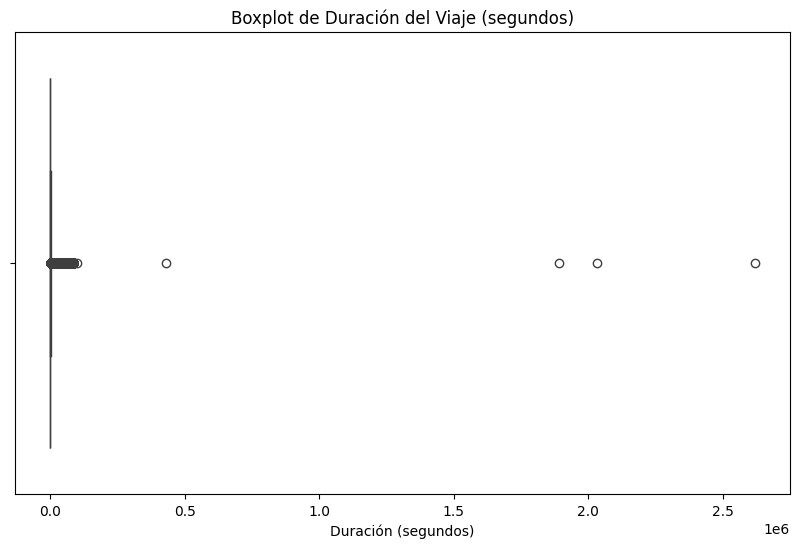
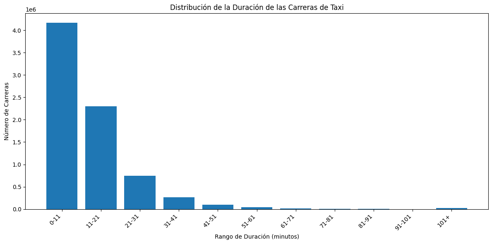

Content with notebooks#
You can also create content with Jupyter Notebooks. This means that you can include code blocks and their outputs in your book.
Markdown + notebooks#
As it is markdown, you can embed images, HTML, etc into your posts!
You can also \(add_{math}\) and
or
But make sure you $Escape $your $dollar signs $you want to keep!
MyST markdown#
MyST markdown works in Jupyter Notebooks as well. For more information about MyST markdown, check out the MyST guide in Jupyter Book, or see the MyST markdown documentation.
Code blocks and outputs#
Jupyter Book will also embed your code blocks and output in your book. For example, here’s some sample Matplotlib code:
import pandas as pd
import matplotlib.pyplot as plt
import seaborn as sns
import plotly.express as px
import numpy as np
df_taxi = pd.read_csv(r"C:\Users\PC\Desktop\data trabajo final\archive\yellow_tripdata_2019-01.csv")
df_taxi.shape
(7667792, 18)
def process_taxi_data(df_taxi):
taxi = df_taxi[['tpep_pickup_datetime', 'tpep_dropoff_datetime', 'PULocationID',
'DOLocationID','passenger_count', 'trip_distance','fare_amount','total_amount', 'payment_type', 'tolls_amount']].copy()
# Renaming Columns
new_names = {'tpep_pickup_datetime': 'PickUpDate', 'tpep_dropoff_datetime':'DropOffDate', 'passenger_count': 'Passengers',
'trip_distance':'Distance'}
taxi = taxi.rename(columns=new_names)
# Correct Format in Date Columns
taxi['PickUpDate'] = pd.to_datetime(taxi['PickUpDate'], format='%Y-%m-%d %H:%M:%S')
taxi['DropOffDate'] = pd.to_datetime(taxi['DropOffDate'], format='%Y-%m-%d %H:%M:%S')
# Create Columns for Date Analysis
taxi['PickUpYear'] = taxi['PickUpDate'].dt.year
taxi['PickUpMonth'] = taxi['PickUpDate'].dt.month
taxi['PickUpWeek'] = taxi['PickUpDate'].dt.isocalendar().week
taxi['PickUpDay'] = taxi['PickUpDate'].dt.day
taxi['PickUpHour'] = taxi['PickUpDate'].dt.hour
taxi['PickUpDayWeek'] = taxi['PickUpDate'].dt.dayofweek + 1
# Duration Column
taxi['Duration'] = taxi['DropOffDate'] - taxi['PickUpDate']
# Total Amount Column
taxi['total_amount'] = taxi['total_amount'].abs()
# Drop Date Columns
taxi = taxi.drop(labels=['PickUpDate', 'DropOffDate'], axis=1)
return taxi
taxi_df = process_taxi_data(df_taxi)
taxi_df = process_taxi_data(df_taxi)
taxi_df = taxi_df[['PULocationID', 'DOLocationID', 'Passengers', 'Distance', 'fare_amount', 'total_amount', 'PickUpYear', 'PickUpMonth', 'PickUpWeek', 'PickUpDay', 'PickUpHour', 'PickUpDayWeek','payment_type', 'tolls_amount', 'Duration' ]]
taxi_df.head()
| PULocationID | DOLocationID | Passengers | Distance | fare_amount | total_amount | PickUpYear | PickUpMonth | PickUpWeek | PickUpDay | PickUpHour | PickUpDayWeek | payment_type | tolls_amount | Duration | |
|---|---|---|---|---|---|---|---|---|---|---|---|---|---|---|---|
| 0 | 151 | 239 | 1 | 1.5 | 7.0 | 9.95 | 2019 | 1 | 1 | 1 | 0 | 2 | 1 | 0.0 | 0 days 00:06:40 |
| 1 | 239 | 246 | 1 | 2.6 | 14.0 | 16.30 | 2019 | 1 | 1 | 1 | 0 | 2 | 1 | 0.0 | 0 days 00:19:12 |
| 2 | 236 | 236 | 3 | 0.0 | 4.5 | 5.80 | 2018 | 12 | 51 | 21 | 13 | 5 | 1 | 0.0 | 0 days 00:04:10 |
| 3 | 193 | 193 | 5 | 0.0 | 3.5 | 7.55 | 2018 | 11 | 48 | 28 | 15 | 3 | 2 | 0.0 | 0 days 00:03:20 |
| 4 | 193 | 193 | 5 | 0.0 | 52.0 | 55.55 | 2018 | 11 | 48 | 28 | 15 | 3 | 2 | 0.0 | 0 days 00:01:36 |
negative_durations = taxi_df[taxi_df['Duration'] < pd.Timedelta(0)]
negative_durations
| PULocationID | DOLocationID | Passengers | Distance | fare_amount | total_amount | PickUpYear | PickUpMonth | PickUpWeek | PickUpDay | PickUpHour | PickUpDayWeek | payment_type | tolls_amount | Duration | |
|---|---|---|---|---|---|---|---|---|---|---|---|---|---|---|---|
| 1203127 | 100 | 79 | 1 | 3.3 | 16.00 | 16.80 | 2019 | 1 | 1 | 6 | 15 | 7 | 2 | 0.00 | -59 days +11:19:30 |
| 2976251 | 164 | 145 | 3 | 7.6 | 29.50 | 36.06 | 2019 | 1 | 2 | 13 | 15 | 7 | 2 | 5.76 | -20 days +16:22:16 |
| 4741726 | 186 | 162 | 1 | 1.9 | 15.50 | 19.55 | 2019 | 1 | 3 | 20 | 15 | 7 | 1 | 0.00 | -2 days +00:41:46 |
| 5175736 | 265 | 265 | 1 | 0.0 | 3.52 | 3.77 | 2019 | 1 | 4 | 22 | 16 | 2 | 2 | 0.00 | -1 days +23:59:00 |
taxi_df = taxi_df[taxi_df['Duration'] >= pd.Timedelta(0)]
taxi_df['Duration'].describe()
count 7667788
mean 0 days 00:16:29.773001679
std 0 days 01:15:15.920851954
min 0 days 00:00:00
25% 0 days 00:06:06
50% 0 days 00:10:09
75% 0 days 00:16:34
max 30 days 07:28:01
Name: Duration, dtype: object
eliminar datos atípidos#
# Convertir la columna 'Duration' a números (segundos) para poder hacer un boxplot
taxi_df['Duration_seconds'] = taxi_df['Duration'].dt.total_seconds()
# Ahora puedes hacer un boxplot de 'Duration_seconds'
plt.figure(figsize=(10, 6))
sns.boxplot(x=taxi_df['Duration_seconds'])
plt.title('Boxplot de Duración del Viaje (segundos)')
plt.xlabel('Duración (segundos)')
plt.show()

# Convertir la columna 'Duration' a minutos
taxi_df['Duration_minutes'] = taxi_df['Duration'].dt.total_seconds() / 60
# Crear rangos de minutos
bins = [0, 11, 21, 31, 41, 51, 61, 71, 81, 91, 101, float('inf')]
labels = ['0-11', '11-21', '21-31', '31-41', '41-51', '51-61', '61-71', '71-81', '81-91', '91-101', '101+']
# Agrupar por rangos de minutos y contar las carreras
taxi_df['Duration_range'] = pd.cut(taxi_df['Duration_minutes'], bins=bins, labels=labels, include_lowest=True)
race_count_by_range = taxi_df.groupby('Duration_range')['Duration'].count()
race_count_by_range
C:\Users\PC\AppData\Local\Temp\ipykernel_6236\3245737099.py:10: FutureWarning: The default of observed=False is deprecated and will be changed to True in a future version of pandas. Pass observed=False to retain current behavior or observed=True to adopt the future default and silence this warning.
race_count_by_range = taxi_df.groupby('Duration_range')['Duration'].count()
Duration_range
0-11 4171029
11-21 2299490
21-31 748375
31-41 260636
41-51 100123
51-61 40545
61-71 16582
71-81 6262
81-91 2153
91-101 790
101+ 21803
Name: Duration, dtype: int64
# Crear el gráfico de barras
plt.figure(figsize=(12, 6)) # Ajustar el tamaño del gráfico
plt.bar(race_count_by_range.index, race_count_by_range.values)
# Etiquetas y título del gráfico
plt.xlabel('Rango de Duración (minutos)')
plt.ylabel('Número de Carreras')
plt.title('Distribución de la Duración de las Carreras de Taxi')
# Rotar las etiquetas del eje x para una mejor legibilidad (opcional)
plt.xticks(rotation=45, ha='right')
# Mostrar el gráfico
plt.tight_layout()
plt.show()

# Check for NaN values in the DataFrame
nan_counts = taxi_df.isna().sum()
# Print the counts of NaN values for each column
print(nan_counts)
# Optionally, you can also check if there are any NaN values in the entire DataFrame
has_nan = taxi_df.isnull().values.any()
print(f"\nDoes the DataFrame contain NaN values? {has_nan}")
PULocationID 0
DOLocationID 0
Passengers 0
Distance 0
fare_amount 0
total_amount 0
PickUpYear 0
PickUpMonth 0
PickUpWeek 0
PickUpDay 0
PickUpHour 0
PickUpDayWeek 0
payment_type 0
tolls_amount 0
Duration 0
Duration_seconds 0
Duration_minutes 0
Duration_range 0
dtype: int64
Does the DataFrame contain NaN values? False
duplicate_rows = taxi_df[taxi_df.duplicated()]
num_duplicates = len(duplicate_rows)
print(f"Número de filas duplicadas: {num_duplicates}")
Número de filas duplicadas: 967
# Eliminar filas con valores NaN
taxi_df = taxi_df.dropna()
# Eliminar filas duplicadas
taxi_df = taxi_df.drop_duplicates()
# Verificar si se eliminaron los valores NaN y las filas duplicadas
nan_counts = taxi_df.isna().sum()
print(nan_counts)
duplicate_rows = taxi_df[taxi_df.duplicated()]
num_duplicates = len(duplicate_rows)
print(f"Número de filas duplicadas: {num_duplicates}")
PULocationID 0
DOLocationID 0
Passengers 0
Distance 0
fare_amount 0
total_amount 0
PickUpYear 0
PickUpMonth 0
PickUpWeek 0
PickUpDay 0
PickUpHour 0
PickUpDayWeek 0
payment_type 0
tolls_amount 0
Duration 0
Duration_seconds 0
Duration_minutes 0
Duration_range 0
dtype: int64
Número de filas duplicadas: 0
plt.figure(figsize=(10, 6))
sns.scatterplot(x='Distance', y='total_amount', data=taxi_df)
plt.title('Distance vs Total Amount')
plt.xlabel('Distance')
plt.ylabel('Total Amount')
plt.show()

There is a lot more that you can do with outputs (such as including interactive outputs) with your book. For more information about this, see the Jupyter Book documentation